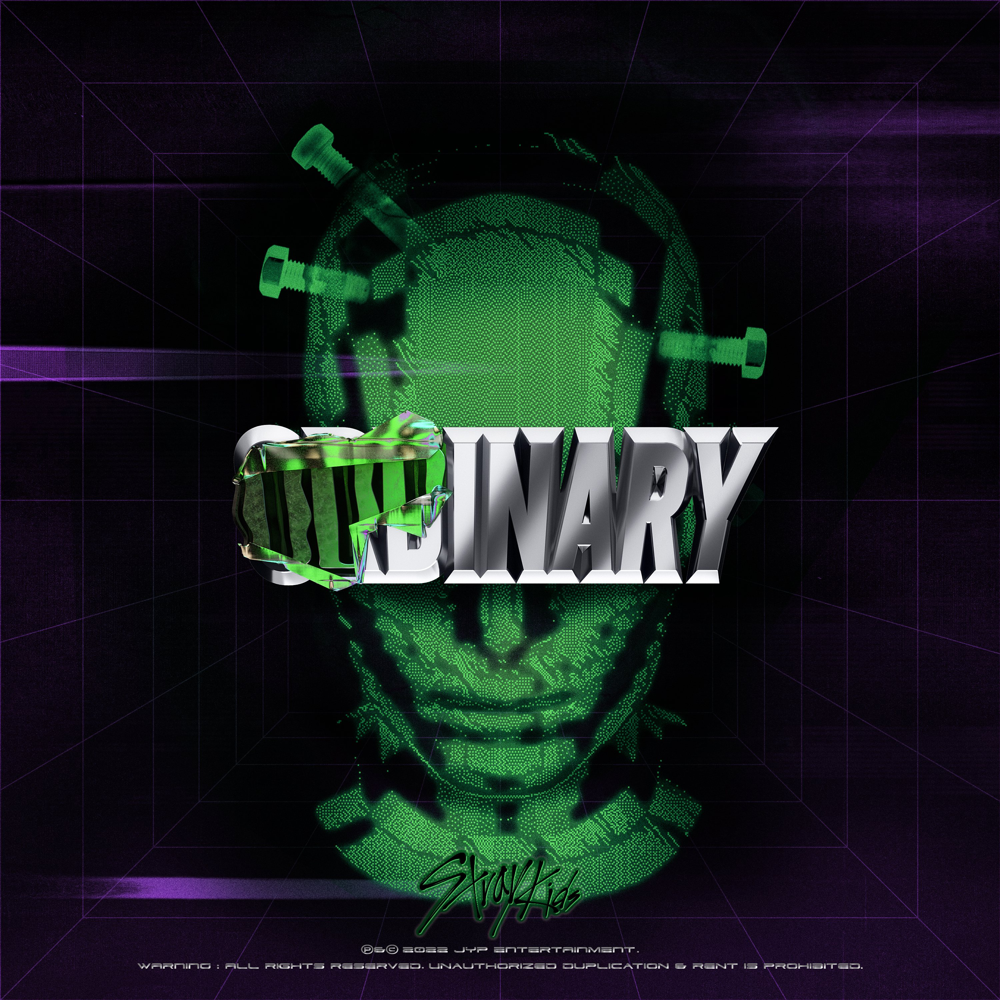

Oddinary Album Info
Oddinary is the seventh mini-album by Stray Kids, featuring the hit title track "Maniac". The album showcases the group's unique style and powerful performances.
Oddinary is the seventh mini-album by Stray Kids, featuring the hit title track "Maniac". The album showcases the group's unique style and powerful performances.